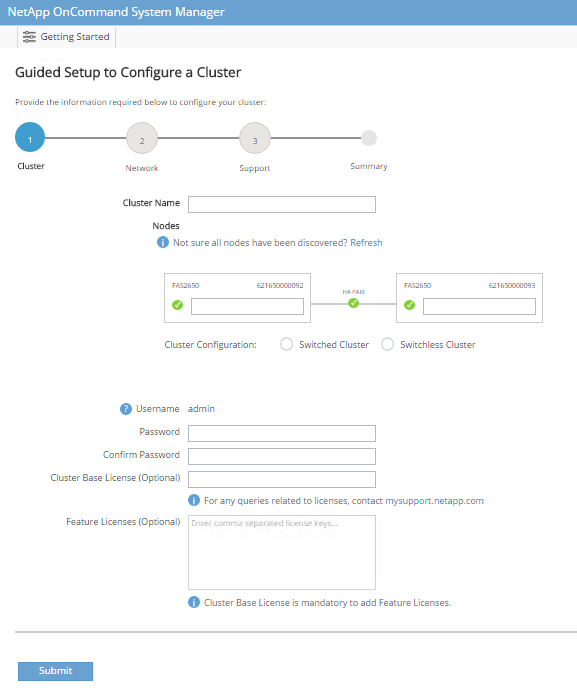

请求文档变更
请求文档变更 在 GitHub 上编辑
在 GitHub 上编辑 提供者指南
提供者指南NetApp 存储部署操作步骤（第 1 部分）
本节介绍 NetApp AFF 存储部署操作步骤。
NetApp 存储控制器 AFF2 xx 系列安装
NetApp Hardware Universe
NetApp Hardware Universe （ HWU ）应用程序可为任何特定 ONTAP 版本提供受支持的硬件和软件组件。它提供了 ONTAP 软件当前支持的所有 NetApp 存储设备的配置信息。此外，还提供了一个组件兼容性表。
确认要安装的 ONTAP 版本支持您要使用的硬件和软件组件：
-
访问 "HWU" 应用程序以查看系统配置指南。单击控制器选项卡以查看不同版本的 ONTAP 软件与符合所需规格的 NetApp 存储设备之间的兼容性。
-
或者，要按存储设备比较组件，请单击比较存储系统。
| 控制器 AFFXX 系列的前提条件 |
|---|
要规划存储系统的物理位置，请参见 NetApp Hardware Universe 。请参阅以下部分：电气要求，支持的电源线以及板载端口和缆线。 |
存储控制器
按照中控制器的物理安装过程进行操作 "AFF A220 文档"。
NetApp ONTAP 9.4
配置工作表
在运行设置脚本之前，请填写产品手册中的配置工作表。中提供了配置工作表 "《 ONTAP 9.4 软件设置指南》"。

|
此系统在双节点无交换机集群配置中设置。 |
下表显示了 ONTAP 9.4 的安装和配置信息。
| 集群详细信息 | 集群详细信息值 |
|---|---|
集群节点 A IP 地址 |
<<var_nodeA_mgmt_ip>> |
集群节点 A 网络掩码 |
<<var_nodeA_mgmt_mask>> |
集群节点 A 网关 |
<<var_nodeA_mgmt_gateway>> |
集群节点 A 名称 |
<<var_nodeA>> |
集群节点 B IP 地址 |
<<var_nodeB_mgmt_ip>> |
集群节点 B 网络掩码 |
<<var_nodeB_mgmt_mask>> |
集群节点 B 网关 |
<<var_nodeB_mgmt_gateway>> |
集群节点 B 名称 |
<<var_nodeB>> |
ONTAP 9.4 URL |
<<var_url_boot_software>> |
集群的名称 |
<<var_clustername>> |
集群管理 IP 地址 |
<<var_clustermgmt_ip>> |
集群 B 网关 |
<<var_clustermgmt_gateway>> |
集群 B 网络掩码 |
<<var_clustermgmt_mask>> |
域名 |
<<var_domain_name>> |
DNS 服务器 IP （您可以输入多个） |
<<var_dns_server_ip>> |
NTP 服务器 IP （您可以输入多个） |
<<var_ntp_server_ip>> |
配置节点 A
要配置节点 A ，请完成以下步骤：
-
连接到存储系统控制台端口。您应看到 Loader-A 提示符。但是，如果存储系统处于重新启动循环中，请在看到以下消息时按 Ctrl-C 退出自动启动循环：
Starting AUTOBOOT press Ctrl-C to abort…
-
允许系统启动。
autoboot
-
按 Ctrl-C 进入启动菜单。
如果 ONTAP 9.4 不是要启动的软件版本，请继续执行以下步骤以安装新软件。如果要启动的是 ONTAP 9.4 版本，请选择选项 8 和 y 以重新启动节点。然后，继续执行步骤 14 。
-
要安装新软件，请选择选项
7。 -
输入
y执行升级。 -
为要用于下载的网络端口选择
e0M。 -
输入
y立即重新启动。 -
在相应位置输入 e0M 的 IP 地址，网络掩码和默认网关。
<<var_nodeA_mgmt_ip>> <<var_nodeA_mgmt_mask>> <<var_nodeA_mgmt_gateway>>
-
输入可在其中找到软件的 URL 。
此 Web 服务器必须可执行 Ping 操作。 <<var_url_boot_software>>
-
按 Enter 输入用户名，表示无用户名。
-
输入
y将新安装的软件设置为后续重新启动所使用的默认软件。 -
输入
y以重新启动节点。安装新软件时，系统可能会对 BIOS 和适配器卡执行固件升级，从而导致重新启动，并可能在 Loader-A 提示符处停止。如果发生这些操作，系统可能会与此操作步骤有所偏差。
-
按 Ctrl-C 进入启动菜单。
-
为 Clean Configuration 和 Initialize All Disks 选择选项
4。 -
输入
y将磁盘置零，重置配置并安装新的文件系统。 -
输入
y以擦除磁盘上的所有数据。根聚合的初始化和创建可能需要 90 分钟或更长时间才能完成，具体取决于所连接磁盘的数量和类型。初始化完成后，存储系统将重新启动。请注意， SSD 初始化所需的时间要少得多。您可以在节点 A 的磁盘置零时继续进行节点 B 配置。
-
在节点 A 初始化期间，开始配置节点 B
配置节点 B
要配置节点 B ，请完成以下步骤：
-
连接到存储系统控制台端口。您应看到 Loader-A 提示符。但是，如果存储系统处于重新启动循环中，请在看到以下消息时按 Ctrl-C 退出自动启动循环：
Starting AUTOBOOT press Ctrl-C to abort…
-
按 Ctrl-C 进入启动菜单。
autoboot
-
出现提示时，按 Ctrl-C 。
如果 ONTAP 9.4 不是要启动的软件版本，请继续执行以下步骤以安装新软件。如果要启动的是 ONTAP 9.4 版本，请选择选项 8 和 y 以重新启动节点。然后，继续执行步骤 14 。
-
要安装新软件，请选择选项 7 。
-
输入
y执行升级。 -
为要用于下载的网络端口选择
e0M。 -
输入
y立即重新启动。 -
在相应位置输入 e0M 的 IP 地址，网络掩码和默认网关。
<<var_nodeB_mgmt_ip>> <<var_nodeB_mgmt_ip>><<var_nodeB_mgmt_gateway>>
-
输入可在其中找到软件的 URL 。
此 Web 服务器必须可执行 Ping 操作。 <<var_url_boot_software>>
-
按 Enter 输入用户名，表示无用户名。
-
输入
y将新安装的软件设置为后续重新启动所使用的默认软件。 -
输入
y以重新启动节点。安装新软件时，系统可能会对 BIOS 和适配器卡执行固件升级，从而导致重新启动，并可能在 Loader-A 提示符处停止。如果发生这些操作，系统可能会与此操作步骤有所偏差。
-
按 Ctrl-C 进入启动菜单。
-
选择选项 4 以清除配置并初始化所有磁盘。
-
输入
y将磁盘置零，重置配置并安装新的文件系统。 -
输入
y以擦除磁盘上的所有数据。根聚合的初始化和创建可能需要 90 分钟或更长时间才能完成，具体取决于所连接磁盘的数量和类型。初始化完成后，存储系统将重新启动。请注意， SSD 初始化所需的时间要少得多。
继续执行节点 A 配置和集群配置
从连接到存储控制器 A （节点 A ）控制台端口的控制台端口程序中，运行节点设置脚本。首次在节点上启动 ONTAP 9.4 时，将显示此脚本。
|
|
在 ONTAP 9.4 中，节点和集群设置操作步骤略有变化。现在，集群设置向导用于配置集群中的第一个节点，而 System Manager 用于配置集群。 |
-
按照提示设置节点 A
Welcome to the cluster setup wizard. You can enter the following commands at any time: "help" or "?" - if you want to have a question clarified, "back" - if you want to change previously answered questions, and "exit" or "quit" - if you want to quit the cluster setup wizard. Any changes you made before quitting will be saved. You can return to cluster setup at any time by typing "cluster setup". To accept a default or omit a question, do not enter a value. This system will send event messages and periodic reports to NetApp Technical Support. To disable this feature, enter autosupport modify -support disable within 24 hours. Enabling AutoSupport can significantly speed problem determination and resolution should a problem occur on your system. For further information on AutoSupport, see: http://support.netapp.com/autosupport/ Type yes to confirm and continue {yes}: yes Enter the node management interface port [e0M]: Enter the node management interface IP address: <<var_nodeA_mgmt_ip>> Enter the node management interface netmask: <<var_nodeA_mgmt_mask>> Enter the node management interface default gateway: <<var_nodeA_mgmt_gateway>> A node management interface on port e0M with IP address <<var_nodeA_mgmt_ip>> has been created. Use your web browser to complete cluster setup by accessing https://<<var_nodeA_mgmt_ip>> Otherwise, press Enter to complete cluster setup using the command line interface: -
导航到节点管理接口的 IP 地址。
也可以使用命令行界面执行集群设置。本文档介绍如何使用 NetApp System Manager 引导式设置进行集群设置。
-
单击引导式设置以配置集群。
-
输入 ` <<var_clustername>>` 作为集群名称，并为要配置的每个节点输入 ` <<var_nodeA>>` 和 ` <<var_nodeB>>` 。输入要用于存储系统的密码。选择无交换机集群作为集群类型。输入集群基本许可证。

-
您还可以输入集群， NFS 和 iSCSI 的功能许可证。
-
此时将显示一条状态消息，指出正在创建集群。此状态消息会循环显示多个状态。此过程需要几分钟时间。
-
配置网络。
-
取消选择 IP 地址范围选项。
-
在集群管理 IP 地址字段中输入 ` [var_clustermgmt_ip]` ，在网络掩码字段中输入 ` [var_clustermgmt_mask]` ，在网关字段中输入 ` [var_clustermgmt_gateway]` 。使用… 选择端口字段中的选择器以选择节点 A 的 e0M
-
节点 A 的节点管理 IP 已填充。为节点 B 输入 ` <<var_nodeA_mgmt_ip>>`
-
在 DNS 域名字段中输入 ` <<var_domain_name>>` 。在 DNS Server IP Address 字段中输入 ` <<var_dns_server_ip>>` 。
您可以输入多个 DNS 服务器 IP 地址。
-
在主 NTP 服务器字段中输入 ` <<var_ntp_server_ip>>` 。
您也可以输入备用 NTP 服务器。
-
-
配置支持信息。
-
如果您的环境需要代理来访问 AutoSupport ，请在代理 URL 中输入 URL 。
-
输入事件通知的 SMTP 邮件主机和电子邮件地址。
您必须至少设置事件通知方法，然后才能继续操作。您可以选择任何方法。

-
-
当指示集群配置已完成时，单击 Manage Your Cluster 以配置存储。
继续存储集群配置
配置存储节点和基础集群后，您可以继续配置存储集群。
将所有备用磁盘置零
要将集群中的所有备用磁盘置零，请运行以下命令：
disk zerospares
设置板载 UTA2 端口个性化设置
-
运行
ucadmin show命令，验证端口的当前模式和当前类型。AFF A220::> ucadmin show Current Current Pending Pending Admin Node Adapter Mode Type Mode Type Status ------------ ------- ------- --------- ------- --------- ----------- AFF A220_A 0c fc target - - online AFF A220_A 0d fc target - - online AFF A220_A 0e fc target - - online AFF A220_A 0f fc target - - online AFF A220_B 0c fc target - - online AFF A220_B 0d fc target - - online AFF A220_B 0e fc target - - online AFF A220_B 0f fc target - - online 8 entries were displayed. -
验证正在使用的端口的当前模式是否为
CNA，当前类型是否设置为目标。如果不是，请使用以下命令更改端口个性化设置：ucadmin modify -node <home node of the port> -adapter <port name> -mode cna -type target
要运行上一个命令，端口必须处于脱机状态。要使端口脱机，请运行以下命令：
`network fcp adapter modify -node <home node of the port> -adapter <port name> -state down`
如果更改了端口属性，则必须重新启动每个节点，此更改才能生效。
重命名管理逻辑接口（ LIF ）
要重命名管理 LIF ，请完成以下步骤：
-
显示当前管理 LIF 名称。
network interface show –vserver <<clustername>>
-
重命名集群管理 LIF 。
network interface rename –vserver <<clustername>> –lif cluster_setup_cluster_mgmt_lif_1 –newname cluster_mgmt
-
重命名节点 B 管理 LIF 。
network interface rename -vserver <<clustername>> -lif cluster_setup_node_mgmt_lif_AFF A220_B_1 -newname AFF A220-02_mgmt1
在集群管理上设置自动还原
在集群管理界面上设置 auto-revert 参数。
network interface modify –vserver <<clustername>> -lif cluster_mgmt –auto-revert true
设置服务处理器网络接口
要为每个节点上的服务处理器分配静态 IPv4 地址，请运行以下命令：
system service-processor network modify –node <<var_nodeA>> -address-family IPv4 –enable true –dhcp none –ip-address <<var_nodeA_sp_ip>> -netmask <<var_nodeA_sp_mask>> -gateway <<var_nodeA_sp_gateway>> system service-processor network modify –node <<var_nodeB>> -address-family IPv4 –enable true –dhcp none –ip-address <<var_nodeB_sp_ip>> -netmask <<var_nodeB_sp_mask>> -gateway <<var_nodeB_sp_gateway>>
|
|
服务处理器 IP 地址应与节点管理 IP 地址位于同一子网中。 |
在 ONTAP 中启用存储故障转移
要确认已启用存储故障转移，请在故障转移对中运行以下命令：
-
验证存储故障转移的状态。
storage failover show
` [var_nodeA]` 和 ` [var_nodeB]` 都必须能够执行接管。如果节点可以执行接管，请转至步骤 3 。
-
在两个节点之一上启用故障转移。
storage failover modify -node <<var_nodeA>> -enabled true
在一个节点上启用故障转移后，这两个节点都可以进行故障转移。
-
验证双节点集群的 HA 状态。
此步骤不适用于具有两个以上节点的集群。
cluster ha show
-
如果配置了高可用性，请转至步骤 6 。如果配置了高可用性，则在发出命令时会显示以下消息：
High Availability Configured: true
-
仅为双节点集群启用 HA 模式。
请勿对具有两个以上节点的集群运行此命令，因为它会导致故障转移出现问题。 cluster ha modify -configured true Do you want to continue? {y|n}: y -
验证是否已正确配置硬件辅助，并根据需要修改配对 IP 地址。
storage failover hwassist show
消息
保活状态：错误：未收到配对节点发出的 hwassist 保活警报表示未配置硬件协助。运行以下命令以配置硬件辅助。storage failover modify –hwassist-partner-ip <<var_nodeB_mgmt_ip>> -node <<var_nodeA>> storage failover modify –hwassist-partner-ip <<var_nodeA_mgmt_ip>> -node <<var_nodeB>>
在 ONTAP 中创建巨型帧 MTU 广播域
要创建 MTU 为 9000 的数据广播域，请运行以下命令：
broadcast-domain create -broadcast-domain Infra_NFS -mtu 9000 broadcast-domain create -broadcast-domain Infra_iSCSI-A -mtu 9000 broadcast-domain create -broadcast-domain Infra_iSCSI-B -mtu 9000
从默认广播域中删除数据端口
10GbE 数据端口用于 iSCSI/NFS 流量，这些端口应从默认域中删除。不使用端口 e0e 和 e0f ，也应从默认域中删除。
要从广播域中删除端口，请运行以下命令：
broadcast-domain remove-ports -broadcast-domain Default -ports <<var_nodeA>>:e0c, <<var_nodeA>>:e0d, <<var_nodeA>>:e0e, <<var_nodeA>>:e0f, <<var_nodeB>>:e0c, <<var_nodeB>>:e0d, <<var_nodeA>>:e0e, <<var_nodeA>>:e0f
禁用 UTA2 端口上的流量控制
NetApp 最佳实践是，在连接到外部设备的所有 UTA2 端口上禁用流量控制。要禁用流量控制，请运行以下命令：
net port modify -node <<var_nodeA>> -port e0c -flowcontrol-admin none
Warning: Changing the network port settings will cause a several second interruption in carrier.
Do you want to continue? {y|n}: y
net port modify -node <<var_nodeA>> -port e0d -flowcontrol-admin none
Warning: Changing the network port settings will cause a several second interruption in carrier.
Do you want to continue? {y|n}: y
net port modify -node <<var_nodeA>> -port e0e -flowcontrol-admin none
Warning: Changing the network port settings will cause a several second interruption in carrier.
Do you want to continue? {y|n}: y
net port modify -node <<var_nodeA>> -port e0f -flowcontrol-admin none
Warning: Changing the network port settings will cause a several second interruption in carrier.
Do you want to continue? {y|n}: y
net port modify -node <<var_nodeB>> -port e0c -flowcontrol-admin none
Warning: Changing the network port settings will cause a several second interruption in carrier.
Do you want to continue? {y|n}: y
net port modify -node <<var_nodeB>> -port e0d -flowcontrol-admin none
Warning: Changing the network port settings will cause a several second interruption in carrier.
Do you want to continue? {y|n}: y
net port modify -node <<var_nodeB>> -port e0e -flowcontrol-admin none
Warning: Changing the network port settings will cause a several second interruption in carrier.
Do you want to continue? {y|n}: y
net port modify -node <<var_nodeB>> -port e0f -flowcontrol-admin none
Warning: Changing the network port settings will cause a several second interruption in carrier.
Do you want to continue? {y|n}: y
在 ONTAP 中配置 IFGRP LACP
此类型的接口组需要两个或更多以太网接口以及一个支持 LACP 的交换机。确保交换机配置正确。
在集群提示符处，完成以下步骤。
ifgrp create -node <<var_nodeA>> -ifgrp a0a -distr-func port -mode multimode_lacp network port ifgrp add-port -node <<var_nodeA>> -ifgrp a0a -port e0c network port ifgrp add-port -node <<var_nodeA>> -ifgrp a0a -port e0d ifgrp create -node << var_nodeB>> -ifgrp a0a -distr-func port -mode multimode_lacp network port ifgrp add-port -node <<var_nodeB>> -ifgrp a0a -port e0c network port ifgrp add-port -node <<var_nodeB>> -ifgrp a0a -port e0d
在 NetApp ONTAP 中配置巨型帧
要将 ONTAP 网络端口配置为使用巨型帧（ MTU 通常为 9 ， 000 字节），请从集群 Shell 运行以下命令：
AFF A220::> network port modify -node node_A -port a0a -mtu 9000
Warning: This command will cause a several second interruption of service on
this network port.
Do you want to continue? {y|n}: y
AFF A220::> network port modify -node node_B -port a0a -mtu 9000
Warning: This command will cause a several second interruption of service on
this network port.
Do you want to continue? {y|n}: y
在 ONTAP 中创建 VLAN
要在 ONTAP 中创建 VLAN ，请完成以下步骤：
-
创建 NFS VLAN 端口并将其添加到数据广播域。
network port vlan create –node <<var_nodeA>> -vlan-name a0a-<<var_nfs_vlan_id>> network port vlan create –node <<var_nodeB>> -vlan-name a0a-<<var_nfs_vlan_id>> broadcast-domain add-ports -broadcast-domain Infra_NFS -ports <<var_nodeA>>:a0a-<<var_nfs_vlan_id>>, <<var_nodeB>>:a0a-<<var_nfs_vlan_id>>
-
创建 iSCSI VLAN 端口并将其添加到数据广播域。
network port vlan create –node <<var_nodeA>> -vlan-name a0a-<<var_iscsi_vlan_A_id>> network port vlan create –node <<var_nodeA>> -vlan-name a0a-<<var_iscsi_vlan_B_id>> network port vlan create –node <<var_nodeB>> -vlan-name a0a-<<var_iscsi_vlan_A_id>> network port vlan create –node <<var_nodeB>> -vlan-name a0a-<<var_iscsi_vlan_B_id>> broadcast-domain add-ports -broadcast-domain Infra_iSCSI-A -ports <<var_nodeA>>:a0a-<<var_iscsi_vlan_A_id>>, <<var_nodeB>>:a0a-<<var_iscsi_vlan_A_id>> broadcast-domain add-ports -broadcast-domain Infra_iSCSI-B -ports <<var_nodeA>>:a0a-<<var_iscsi_vlan_B_id>>, <<var_nodeB>>:a0a-<<var_iscsi_vlan_B_id>>
-
创建 MGMT-VLAN 端口。
network port vlan create –node <<var_nodeA>> -vlan-name a0a-<<mgmt_vlan_id>> network port vlan create –node <<var_nodeB>> -vlan-name a0a-<<mgmt_vlan_id>>
在 ONTAP 中创建聚合
在 ONTAP 设置过程中，将创建一个包含根卷的聚合。要创建其他聚合，请确定聚合名称，要创建聚合的节点及其包含的磁盘数。
要创建聚合，请运行以下命令：
aggr create -aggregate aggr1_nodeA -node <<var_nodeA>> -diskcount <<var_num_disks>> aggr create -aggregate aggr1_nodeB -node <<var_nodeB>> -diskcount <<var_num_disks>>
在配置中至少保留一个磁盘（选择最大的磁盘）作为备用磁盘。最佳做法是，每个磁盘类型和大小至少有一个备用磁盘。
从五个磁盘开始；您可以在需要额外存储时向聚合添加磁盘。
在磁盘置零完成之前，无法创建聚合。运行 aggr show 命令以显示聚合创建状态。在 aggr1 _`nodeA` 联机之前，请勿继续操作。
在 ONTAP 中配置时区
要配置时间同步并设置集群上的时区，请运行以下命令：
timezone <<var_timezone>>
|
|
例如，在美国东部，时区为 America/New York 。开始键入时区名称后，按 Tab 键查看可用选项。
|
在 ONTAP 中配置 SNMP
要配置 SNMP ，请完成以下步骤：
-
配置 SNMP 基本信息，例如位置和联系人。轮询时，此信息在 SNMP 中显示为
sysLocation和sysContact变量。snmp contact <<var_snmp_contact>> snmp location “<<var_snmp_location>>” snmp init 1 options snmp.enable on
-
配置 SNMP 陷阱以发送到远程主机。
snmp traphost add <<var_snmp_server_fqdn>>
在 ONTAP 中配置 SNMPv1
要配置 SNMPv1 ，请设置名为社区的共享机密纯文本密码。
snmp community add ro <<var_snmp_community>>
|
|
请谨慎使用 snmp community delete all 命令。如果社区字符串用于其他监控产品，则此命令会将其删除。
|
在 ONTAP 中配置 SNMPv3
SNMPv3 要求您定义并配置用户进行身份验证。要配置 SNMPv3 ，请完成以下步骤：
-
运行
security snmpusers命令以查看引擎 ID 。 -
创建名为
snmpv3user的用户。security login create -username snmpv3user -authmethod usm -application snmp
-
输入权威实体的引擎 ID ，然后选择
mD5作为身份验证协议。 -
出现提示时，输入身份验证协议的最小长度为八个字符的密码。
-
选择
des作为隐私协议。 -
出现提示时，输入隐私协议的最小长度为八个字符的密码。
在 ONTAP 中配置 AutoSupport HTTPS
NetApp AutoSupport 工具通过 HTTPS 向 NetApp 发送支持摘要信息。要配置 AutoSupport ，请运行以下命令：
system node autosupport modify -node * -state enable –mail-hosts <<var_mailhost>> -transport https -support enable -noteto <<var_storage_admin_email>>
创建 Storage Virtual Machine
要创建基础架构 Storage Virtual Machine （ SVM ），请完成以下步骤：
-
运行
vserver create命令。vserver create –vserver Infra-SVM –rootvolume rootvol –aggregate aggr1_nodeA –rootvolume-security-style unix
-
将数据聚合添加到 NetApp VSC 的 infra-sVM 聚合列表中。
vserver modify -vserver Infra-SVM -aggr-list aggr1_nodeA,aggr1_nodeB
-
从 SVM 中删除未使用的存储协议，而不使用 NFS 和 iSCSI 。
vserver remove-protocols –vserver Infra-SVM -protocols cifs,ndmp,fcp
-
在 infra-sVM SVM 中启用并运行 NFS 协议。
`nfs create -vserver Infra-SVM -udp disabled`
-
打开 NetApp NFS VAAI 插件的
SVM vStorage参数。然后，验证是否已配置 NFS 。`vserver nfs modify –vserver Infra-SVM –vstorage enabled` `vserver nfs show `
命令行中的命令前面带有 vserver，因为 Storage Virtual Machine 以前称为服务器。
在 ONTAP 中配置 NFSv3
下表列出了完成此配置所需的信息。
| 详细信息 | 详细信息值 |
|---|---|
ESXi 主机 A NFS IP 地址 |
<<var_esxi_HostA_NFS_IP>> |
ESXi 主机 B NFS IP 地址 |
<<var_esxi_HostB_NFS_IP>> |
要在 SVM 上配置 NFS ，请运行以下命令：
-
在默认导出策略中为每个 ESXi 主机创建一个规则。
-
为要创建的每个 ESXi 主机分配一个规则。每个主机都有自己的规则索引。第一个 ESXi 主机的规则索引为 1 ，第二个 ESXi 主机的规则索引为 2 ，依此类推。
vserver export-policy rule create –vserver Infra-SVM -policyname default –ruleindex 1 –protocol nfs -clientmatch <<var_esxi_hostA_nfs_ip>> -rorule sys –rwrule sys -superuser sys –allow-suid false vserver export-policy rule create –vserver Infra-SVM -policyname default –ruleindex 2 –protocol nfs -clientmatch <<var_esxi_hostB_nfs_ip>> -rorule sys –rwrule sys -superuser sys –allow-suid false vserver export-policy rule show
-
将导出策略分配给基础架构 SVM 根卷。
volume modify –vserver Infra-SVM –volume rootvol –policy default
如果您选择在设置 vSphere 后安装导出策略，则 NetApp VSC 会自动处理导出策略。如果不安装此服务器，则必须在添加其他 Cisco UCS C 系列服务器时创建导出策略规则。
在 ONTAP 中创建 iSCSI 服务
要创建 iSCSI 服务，请完成以下步骤：
-
在 SVM 上创建 iSCSI 服务。此命令还会启动 iSCSI 服务并为 SVM 设置 iSCSI IQN 。验证是否已配置 iSCSI 。
iscsi create -vserver Infra-SVM iscsi show
在 ONTAP 中创建 SVM 根卷的负载共享镜像
-
在每个节点上创建一个卷作为基础架构 SVM 根卷的负载共享镜像。
volume create –vserver Infra_Vserver –volume rootvol_m01 –aggregate aggr1_nodeA –size 1GB –type DP volume create –vserver Infra_Vserver –volume rootvol_m02 –aggregate aggr1_nodeB –size 1GB –type DP
-
创建作业计划，以便每 15 分钟更新一次根卷镜像关系。
job schedule interval create -name 15min -minutes 15
-
创建镜像关系。
snapmirror create -source-path Infra-SVM:rootvol -destination-path Infra-SVM:rootvol_m01 -type LS -schedule 15min snapmirror create -source-path Infra-SVM:rootvol -destination-path Infra-SVM:rootvol_m02 -type LS -schedule 15min
-
初始化镜像关系并验证它是否已创建。
snapmirror initialize-ls-set -source-path Infra-SVM:rootvol snapmirror show
在 ONTAP 中配置 HTTPS 访问
要配置对存储控制器的安全访问，请完成以下步骤：
-
提高访问证书命令的权限级别。
set -privilege diag Do you want to continue? {y|n}: y -
通常，已有自签名证书。运行以下命令以验证证书：
security certificate show
-
对于所示的每个 SVM ，证书公用名应与 SVM 的 DNS FQDN 匹配。四个默认证书应被删除，并替换为自签名证书或证书颁发机构提供的证书。
最好在创建证书之前删除已过期的证书。运行
security certificate delete命令删除已过期的证书。在以下命令中，使用 Tab completion 选择并删除每个默认证书。security certificate delete [TAB] … Example: security certificate delete -vserver Infra-SVM -common-name Infra-SVM -ca Infra-SVM -type server -serial 552429A6
-
要生成并安装自签名证书，请一次性运行以下命令。为 infra-sVM 和集群 SVM 生成服务器证书。同样，请使用 Tab completion 帮助完成这些命令。
security certificate create [TAB] … Example: security certificate create -common-name infra-svm. netapp.com -type server -size 2048 -country US -state "North Carolina" -locality "RTP" -organization "NetApp" -unit "FlexPod" -email-addr "abc@netapp.com" -expire-days 365 -protocol SSL -hash-function SHA256 -vserver Infra-SVM
-
要获取以下步骤中所需参数的值，请运行
security certificate show命令。 -
使用 ` – server-enabled true` 和 ` – client-enabled false` 参数启用刚刚创建的每个证书。同样，请使用 Tab 补全。
security ssl modify [TAB] … Example: security ssl modify -vserver Infra-SVM -server-enabled true -client-enabled false -ca infra-svm.netapp.com -serial 55243646 -common-name infra-svm.netapp.com
-
配置并启用 SSL 和 HTTPS 访问以及禁用 HTTP 访问。
system services web modify -external true -sslv3-enabled true Warning: Modifying the cluster configuration will cause pending web service requests to be interrupted as the web servers are restarted. Do you want to continue {y|n}: y system services firewall policy delete -policy mgmt -service http –vserver <<var_clustername>>
其中某些命令通常会返回一条错误消息，指出此条目不存在。 -
还原到管理员权限级别并创建设置以允许 Web 使用 SVM 。
set –privilege admin vserver services web modify –name spi|ontapi|compat –vserver * -enabled true
在 ONTAP 中创建 NetApp FlexVol 卷
要创建 NetApp FlexVol 卷，请输入卷名称，大小及其所在的聚合。创建两个 VMware 数据存储库卷和一个服务器启动卷。
volume create -vserver Infra-SVM -volume infra_datastore_1 -aggregate aggr1_nodeA -size 500GB -state online -policy default -junction-path /infra_datastore_1 -space-guarantee none -percent-snapshot-space 0 volume create -vserver Infra-SVM -volume infra_swap -aggregate aggr1_nodeA -size 100GB -state online -policy default -junction-path /infra_swap -space-guarantee none -percent-snapshot-space 0 -snapshot-policy none volume create -vserver Infra-SVM -volume esxi_boot -aggregate aggr1_nodeA -size 100GB -state online -policy default -space-guarantee none -percent-snapshot-space 0
在 ONTAP 中启用重复数据删除
要在相应的卷上启用重复数据删除，请运行以下命令：
volume efficiency on –vserver Infra-SVM -volume infra_datastore_1 volume efficiency on –vserver Infra-SVM -volume esxi_boot
在 ONTAP 中创建 LUN
要创建两个启动 LUN ，请运行以下命令：
lun create -vserver Infra-SVM -volume esxi_boot -lun VM-Host-Infra-A -size 15GB -ostype vmware -space-reserve disabled lun create -vserver Infra-SVM -volume esxi_boot -lun VM-Host-Infra-B -size 15GB -ostype vmware -space-reserve disabled
|
|
添加额外的 Cisco UCS C 系列服务器时，必须创建额外的启动 LUN 。 |
在 ONTAP 中创建 iSCSI LIF
下表列出了完成此配置所需的信息。
| 详细信息 | 详细信息值 |
|---|---|
存储节点 A iSCSI LIF01A |
<<var_nodeA_iscsi_lif01a_ip>> |
存储节点 A iSCSI LIF01A 网络掩码 |
<<var_nodeA_iscsi_lif01a_mask>> |
存储节点 A iSCSI LIF01B |
<<var_nodeA_iscsi_lif01b_ip>> |
存储节点 A iSCSI LIF01B 网络掩码 |
<<var_nodeA_iscsi_lif01b_mask>> |
存储节点 B iSCSI LIF01A |
<<var_nodeB_iscsi_lif01a_ip>> |
存储节点 B iSCSI LIF01A 网络掩码 |
<<var_nodeB_iscsi_lif01a_mask>> |
存储节点 B iSCSI LIF01B |
<<var_nodeB_iscsi_lif01b_ip>> |
存储节点 B iSCSI LIF01B 网络掩码 |
<<var_nodeB_iscsi_lif01b_mask>> |
-
创建四个 iSCSI LIF ，每个节点两个。
network interface create -vserver Infra-SVM -lif iscsi_lif01a -role data -data-protocol iscsi -home-node <<var_nodeA>> -home-port a0a-<<var_iscsi_vlan_A_id>> -address <<var_nodeA_iscsi_lif01a_ip>> -netmask <<var_nodeA_iscsi_lif01a_mask>> –status-admin up –failover-policy disabled –firewall-policy data –auto-revert false network interface create -vserver Infra-SVM -lif iscsi_lif01b -role data -data-protocol iscsi -home-node <<var_nodeA>> -home-port a0a-<<var_iscsi_vlan_B_id>> -address <<var_nodeA_iscsi_lif01b_ip>> -netmask <<var_nodeA_iscsi_lif01b_mask>> –status-admin up –failover-policy disabled –firewall-policy data –auto-revert false network interface create -vserver Infra-SVM -lif iscsi_lif02a -role data -data-protocol iscsi -home-node <<var_nodeB>> -home-port a0a-<<var_iscsi_vlan_A_id>> -address <<var_nodeB_iscsi_lif01a_ip>> -netmask <<var_nodeB_iscsi_lif01a_mask>> –status-admin up –failover-policy disabled –firewall-policy data –auto-revert false network interface create -vserver Infra-SVM -lif iscsi_lif02b -role data -data-protocol iscsi -home-node <<var_nodeB>> -home-port a0a-<<var_iscsi_vlan_B_id>> -address <<var_nodeB_iscsi_lif01b_ip>> -netmask <<var_nodeB_iscsi_lif01b_mask>> –status-admin up –failover-policy disabled –firewall-policy data –auto-revert false network interface show
在 ONTAP 中创建 NFS LIF
下表列出了完成此配置所需的信息。
| 详细信息 | 详细信息值 |
|---|---|
存储节点 A NFS LIF 01 IP |
<<var_nodeA_nfs_lif_01_ip>> |
存储节点 A NFS LIF 01 网络掩码 |
<<var_nodeA_nfs_lif_01_mask>> |
存储节点 B NFS LIF 02 IP |
<<var_nodeB_nfs_lif_02_ip>> |
存储节点 B NFS LIF 02 网络掩码 |
<<var_nodeB_nfs_lif_02_mask>> |
-
创建 NFS LIF 。
network interface create -vserver Infra-SVM -lif nfs_lif01 -role data -data-protocol nfs -home-node <<var_nodeA>> -home-port a0a-<<var_nfs_vlan_id>> –address <<var_nodeA_nfs_lif_01_ip>> -netmask << var_nodeA_nfs_lif_01_mask>> -status-admin up –failover-policy broadcast-domain-wide –firewall-policy data –auto-revert true network interface create -vserver Infra-SVM -lif nfs_lif02 -role data -data-protocol nfs -home-node <<var_nodeA>> -home-port a0a-<<var_nfs_vlan_id>> –address <<var_nodeB_nfs_lif_02_ip>> -netmask << var_nodeB_nfs_lif_02_mask>> -status-admin up –failover-policy broadcast-domain-wide –firewall-policy data –auto-revert true network interface show
添加基础架构 SVM 管理员
下表列出了完成此配置所需的信息。
| 详细信息 | 详细信息值 |
|---|---|
Vsmgmt IP |
<<var_svm_mgmt_ip>> |
Vsmgmt 网络掩码 |
<<var_svm_mgmt_mask>> |
Vsmgmt 默认网关 |
<<var_svm_mgmt_gateway>> |
要将基础架构 SVM 管理员和 SVM 管理逻辑接口添加到管理网络，请完成以下步骤：
-
运行以下命令：
network interface create –vserver Infra-SVM –lif vsmgmt –role data –data-protocol none –home-node <<var_nodeB>> -home-port e0M –address <<var_svm_mgmt_ip>> -netmask <<var_svm_mgmt_mask>> -status-admin up –failover-policy broadcast-domain-wide –firewall-policy mgmt –auto-revert true
此处的 SVM 管理 IP 应与存储集群管理 IP 位于同一子网中。 -
创建一个默认路由，以使 SVM 管理接口能够访问外部环境。
network route create –vserver Infra-SVM -destination 0.0.0.0/0 –gateway <<var_svm_mgmt_gateway>> network route show
-
为 SVM vsadmin 用户设置密码并解除锁定此用户。
security login password –username vsadmin –vserver Infra-SVM Enter a new password: <<var_password>> Enter it again: <<var_password>> security login unlock –username vsadmin –vserver Infra-SVM